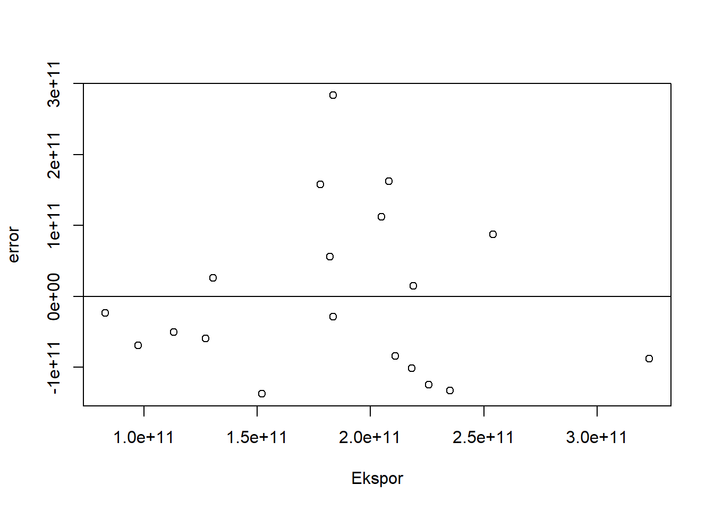
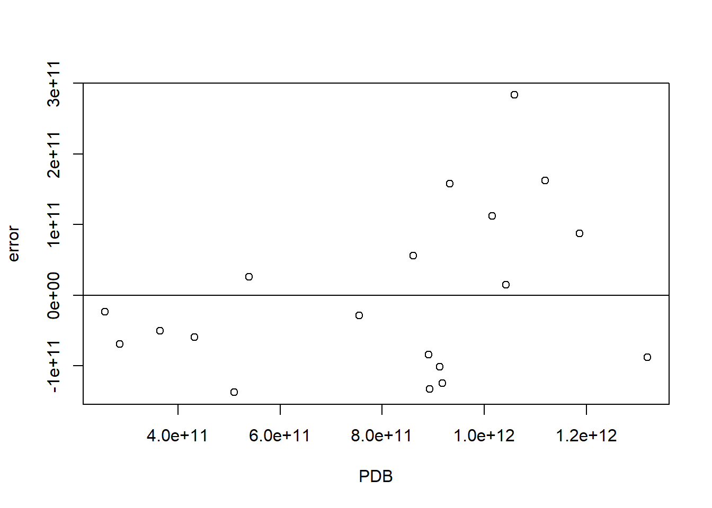

library(tidyverse)
library(readxl)
library(WDI)Pengaruh Ekspor Impor Terhadap PDB Indonesia Periode 2004-2022
Metode Penelitian Politeknik APP Jakarta

1 Pendahuluan
1.1 Latar belakang
Indonesia sebagai negara berkembang memiliki peran yang signifikan dalam perekonomian global. Pertumbuhan Ekonomi dan Perusahaan Domestik Bruto (PDB) menjadi indikator penting dalam mengukur kesejahteraan suatu negara. Dalam upaya untuk mencapai pertumbuhan ekonomi yang berkelanjutan, penting untuk memahami berbagai faktor yang memengaruhi kinerja ekonomi suatu negara.
Salah satu faktor yang memiliki peran krusial dalam perekonomian suatu negara adalah aktivitas ekspor dan impor. Ekspor dan impor merupakan dua elemen penting dalam perdagangan internasional yang dapat memberikan dampak signifikan terhadap PDB suatu negara. Oleh karena itu, analisis mendalam tentang pengaruh ekspor dan impor terhadap PDB menjadi sangat penting untuk memahami dinamika ekonomi Indonesia.
Periode 2004-2022 dipilih karena mencakup rentang waktu yang signifikan dan melibatkan peristiwa ekonomi penting, termasuk krisis keuangan global pada tahun 2008 dan pandemi COVID-19 pada tahun 2020. Dalam kurun waktu tersebut, Indonesia telah mengalami perubahan struktural dan kebijakan ekonomi yang mungkin mempengaruhi hubungan antara ekspor, impor, dan PDB.
Melalui penelitian ini, diharapkan dapat ditemukan hubungan yang lebih dalam antara ekspor, impor, dan PDB Indonesia. Penelitian ini diharapkan dapat memberikan kontribusi pada literatur ekonomi terkait hubungan antara ekspor, impor, dan PDB dalam konteks negara berkembang.
1.2 Ruang lingkup
Ruang lingkup pembahasan masalah sesuai dengan variable yang akan digunakan pada analisis kali ini, yaitu Pengaruh Ekspor Impor Terhadap PDB pada periode 2004-2022 . Batasan masalah ini berperan untuk memfokuskan analisis dan pemahaman terhadap aspek-aspek tertentu yang relevan dengan tujuan penelitian.
1.3 Rumusan masalah
- Apakah ekspor dan impor berpengaruh pada PDB Indonesia?
- Bagaimana hubungan ekspor dan impor terhadap perubahan PDB Indonesia?
1.4 Tujuan dan manfaat penelitian
Tujuan utama dari penelitian ini adalah untuk mencari hubungan sederhana antara kegiatan ekspor dan impor dengan pertumbuhan ekonomi (PDB) Indonesia dari tahun 2004 hingga 2022. Menemukan faktor apa yang paling memengaruhi antara ekspor dan impor terhadap PBD (Produk Domestik Bruto).
Adapun manfaatnya adalah guna menjadikan penelitian ini sebagai sumber informasi bagi masyarakat dan edukasi bagi masyarakat terkait pengaruh ekspor dan impor terhadap PDB pada periode tercantum.
1.5 Package
Untuk keperluan menunjang regresi multivariat yang dilakukan di Rstudio untuk penelitian ini antara lain sebagai berikut:
2 Studi pustaka
Kemajuan perkembangan ekonomi suatu negara adalah salah satu isu yang penting dalam perdebatan ekonomi. Suatu negara dapat mempercepat laju pertumbuhan ekonominya dengan meningkatkan dan mempromosikan ekspor barang dan jasa. Volume impor berhubungan negatif dengan harga relatif dan bervariasi positif dengan permintaan agregat (pertumbuhan PDB riil).(Siti Hodijah, 2021) PDB akan mengalami peningkatan bila nilai ekspor dari suatu negara mengalami meningkat. Ini menunjukkan bahwa barang atau jasa yang diproduksi oleh negara itu digemari oleh negara lain, hal itu berarti nilai ekspor mendominasi daripada nilai impor dan akan meningkatkan kegiatan ekonomi masyarakat. (Tri Puspandari, 2022)
3 Metode penelitian
3.1 Data

| TAHUN | EKSPOR (x) | IMPOR (S) | PDB (Y) |
|---|---|---|---|
| 2004 | 82744351781 | 70744690514 | 2.568369e+11 |
| 2005 | 97387627566 | 85533801154 | 2.858686e+11 |
| 2006 | 113143425288 | 93411754076 | 3.645705e+11 |
| 2007 | 127226102177 | 109755093425 | 4.322167e+11 |
| 2008 | 152090401422 | 146706628549 | 5.102286e+11 |
| 2009 | 130357798591 | 115216544854 | 5.395801e+11 |
| 2010 | 183480562961 | 169158027607 | 7.550942e+11 |
| 2011 | 235095129136 | 212996885270 | 8.929691e+11 |
| 2012 | 225744403268 | 229362102380 | 9.178699e+11 |
| 2013 | 218308408831 | 225519356300 | 9.125241e+11 |
| 2014 | 210820082828 | 217485215773 | 8.908148e+11 |
| 2015 | 182158298805 | 178863652303 | 8.608542e+11 |
| 2016 | 177886012744 | 170835000833 | 9.318774e+11 |
| 2017 | 204924485910 | 194777319199 | 1.015619e+12 |
| 2018 | 218905647885 | 230045612383 | 1.042272e+12 |
| 2019 | 208057763662 | 213034646338 | 1.119100e+12 |
| 2020 | 183546577016 | 165646843305 | 1.059055e+12 |
| 2021 | 254008548673 | 222939963036 | 1.186505e+12 |
| 2022 | 323079953660 | 275703237974 | 1.319100e+12 |
Penelitian ini menggunakan data Exports of goods and service (current US$), Imports of goods and service (current US$) dan GDP (current US$) dari World Development Indicators (The World Bank)
setwd("C:/Users/Xvby/Documents/UAS METEDOLOGI PENELITIAN")
library(readxl)
dat<-read_excel('DATA UAS METODOLOGI PENELITIAN.xlsx')
library(readxl)
reg1<-lm(y~x+s, data=dat)
dat$m<-resid(reg1)
plot(dat$x,dat$m,xlab="Ekspor",ylab="error")
abline(h=0) #membuat garis horizontal di y=0
Plot pengaruh error terhadap Ekspor
library(readxl)
dat$m<-resid(reg1)
plot(dat$y,dat$m,xlab="PDB",ylab="error")
abline(h=0)
Plot pengaruh error terhadap PDB
3.2 Metode analisis
Teknik analisis yang digunakan dalam penelitian ini adalah teknik kuantitatif deskriptif. Metode yang dipilih adalah regresi multivariat dengan 2 variabel independen yaitu ekspor dan impor dan 1 variabel dependen yaitu PDB. Penelitian ini bertujuan untuk mencari hubungan antara ekspor (X) dan impor (S) dengan PDB (Y). Spesifikasi yang dilakukan adalah:
\[ Y=\beta_0 +\beta_1 X+\beta_2 S+\mu \]
Di mana X adalah Ekspor Indonesia, S adalah Impor Indonesia, dan Y adalah PDB Indonesia.
4 Pembahasan
4.1 Pembahasan masalah
Pada bagian ini dapat ditampilkan data dan visualisasi data yang telah dikumpulkan.
| Variable | Coefficient | Std.Error | t-value | Prob (.) |
|---|---|---|---|---|
| Intecerpt | -1.080e+11 | 9.633e+13 | -1.121 | 0.279 |
| X | 2.551e+00 | 2.025e+00 | 1.260 | 0.226 |
| S | 2.507e+00 | |||
| R squared | 0.8632 | |||
| Adjusted R-Squared | 0.8461 | |||
| F-Statistic | 50.46 | |||
| Prob(F-statistic) | 1.229e-07 |
Berikut setelah data dimasukkan ke dalam rumus persamaan :
\[ Y= (-1.080) + 2.551 + 2.507 +\mu \]
Dapat dilihat, bahwa Ekspor dan Impor bisa mempengaruhi peningkatan atau penurunan pada PDB Indonesia. Namun, dapat juga dilihat pada analisis kali ini bahwa Ekspor dan Impor juga tidak terlalu membuat perubahan yang signifikat pada PDB Indonesia.Ditandai dengan setiap kenaikan nilai ekspor dengan diasumsikan nilainya 1, maka dapat meningkatkan PDB sebesar 2.551 dan nilai impor 1 maka PDB akan ada peningkatan 2.507 dengan S yang sama.
Nilai Adjusted R-squared sebesar 0.8632 menjelaskan bahwa variabel independen di dalam penelitian ini dapat menjelaskan variasi variabel dependen sebesar 86,32 %. Nilai F-statistik sebesar 50.46 menunjukkan bahwa variabel independen dalam jangka panjang seperti ekspor dan impor dapat mempengaruhi PDB Indonesia.
4.2 Analisis masalah
Hasil regresinya adalah
setwd("C:/Users/Xvby/Documents/UAS METEDOLOGI PENELITIAN")
dat<-read_excel('DATA UAS METODOLOGI PENELITIAN.xlsx')
library(readxl)
reg1<-lm(y~x+s, data=dat)
summary(reg1)
Call:
lm(formula = y ~ x + s, data = dat)
Residuals:
Min 1Q Median 3Q Max
-1.375e+11 -8.624e+10 -2.904e+10 7.169e+10 2.836e+11
Coefficients:
Estimate Std. Error t value Pr(>|t|)
(Intercept) -1.080e+11 9.633e+10 -1.121 0.279
x 2.551e+00 2.025e+00 1.260 0.226
s 2.507e+00 2.063e+00 1.215 0.242
Residual standard error: 1.239e+11 on 16 degrees of freedom
Multiple R-squared: 0.8632, Adjusted R-squared: 0.8461
F-statistic: 50.46 on 2 and 16 DF, p-value: 1.229e-07Dapat dilihat dari tabel di atas bahwa, setiap kenaikan nilai ekspor (X) dengan diasumsikan nilainya 1, maka dapat meningkatkan PDB sebesar 2.551 dengan S yang sama,dan nilai impor berpengaruh positif juga pada PDB Indonesia, jika diasumsikan nilai impor (S) 1 maka PDB akan ada peningkatan 2.507.
5 Kesimpulan
Dalam rangka mencapai pertumbuhan ekonomi yang berkelanjutan, penting untuk memahami dampak aktivitas ekspor dan impor terhadap Produk Domestik Bruto (PDB) suatu negara. Penelitian ini fokus pada Indonesia dalam periode 2004-2022, mencakup peristiwa penting seperti krisis keuangan global 2008 dan pandemi COVID-19 2020. Diharapkan, analisis mendalam ini dapat memberikan wawasan kepada masyarakat luas untuk mengoptimalkan manfaat perdagangan internasional demi pertumbuhan ekonomi yang berkelanjutan di Indonesia.
Di satu sisi, peningkatan ekspor berkontribusi positif terhadap PDB. Namun, penting untuk menyadari bahwa impor juga memiliki dampak positif. Impor dapat berperan dalam merangsang pasar lokal dengan memperoleh teknologi dan pengetahuan baru dari negara lain. Meskipun demikian, perlu diingat bahwa impor dapat memberikan dampak negatif jika tidak diatur dengan kebijakan yang ketat dan sesuai. Ketidak tersediaan pengawasan yang baik terhadap kegiatan impor dapat berpotensi merugikan pasar lokal dan PDB Indonesia. Oleh karena itu, perlunya kebijakan impor yang bijaksana dan terukur menjadi esensial untuk menjaga keseimbangan dan keberlanjutan ekonomi nasional.
6 Referensi
Hodijah, S., & Angelina, G. P. (2021). ANALISIS PENGARUH EKSPOR DAN IMPOR TERHADAP PERTUMBUHAN EKONOMI DI INDONESIA. Jurnal Online Universitas Jambi, 10, 1–10. https://online-journal.unja.ac.id
Puspandari, T., Priyatno, S. H., Novialum, A., & Herwanti, L. (2022). Pengaruh Ekspor dan Impor terhadap Pertumbuhan Ekonomi di Indonesia. Jurnak Ilmiah Ilmu Pendidikan, 5, 1–4. https://jiip.stkipyapisdompu.ac.id
Multivariat & Dummy regression. Retrieved January 6, 2024, from https://www.krisna.or.id/metopel/meeting3/index.html#/bandingkan-2-model
Nainggolan, H. F. F. F. (2023). Pengaruh Ekspor Impor Terhadap PDRB Provinsi Jawa Timur 2008-2021 [Politeknik APP Jakarta]. https://hizkiafree.github.io/
The World Bank. (n.d.). Retrieved January 7, 2024, from https://data.worldbank.org/indicator/NY.GDP.MKTP.CD?locations=ID
The World Bank. (n.d.). Retrieved January 7, 2024, from https://data.worldbank.org/indicator/NE.EXP.GNFS.CD?locations=ID
The World Bank. (n.d.). Retrieved January 7 2024, from https://data.worldbank.org/indicator/NE.IMP.GNFS.CD?locations=ID